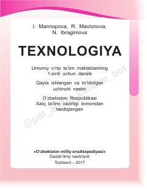

T11-sinf o'quvchilari uchun texnologiya fanidan o'quv qo'llanma va darslik.
Ushbu darslik umumiy o'rta ta'lim maktablarining 1-sinf o'quvchilari uchun mo'ljallangan bo'lib, texnologiya fanining asosiy tushunchalarini o'rgatadi. Kitobda qog'oz, karton va turli tabiiy materiallar bilan ishlash, badiiy qurish-yasash hamda xavfsizlik qoidalari batafsil yoritilgan.